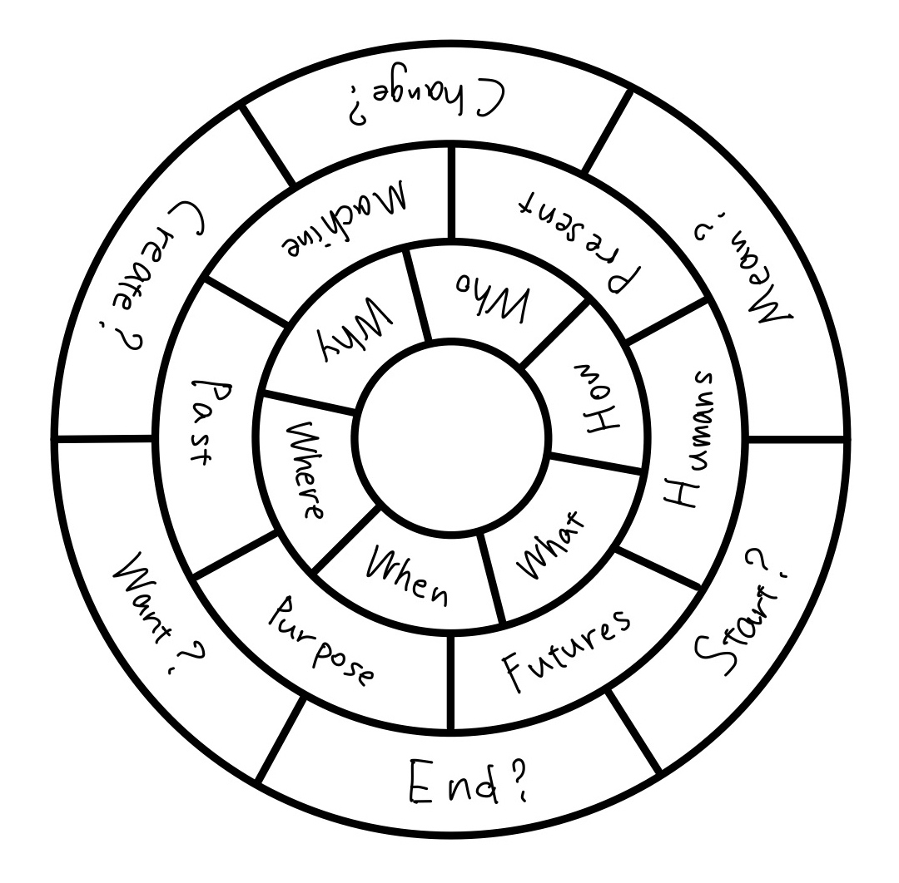
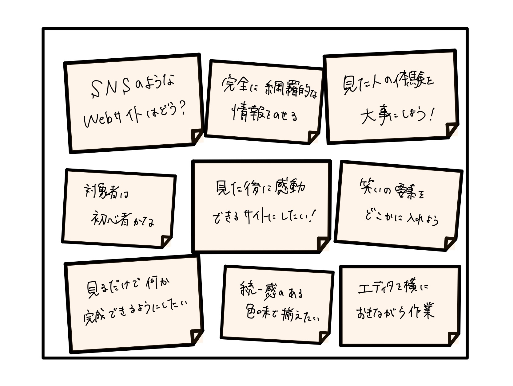
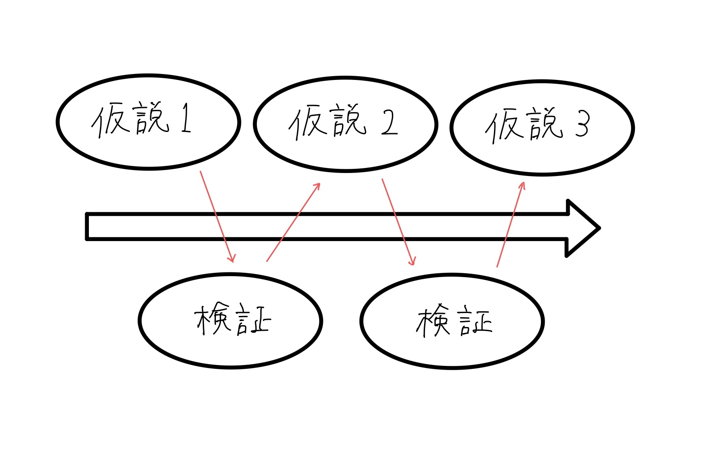
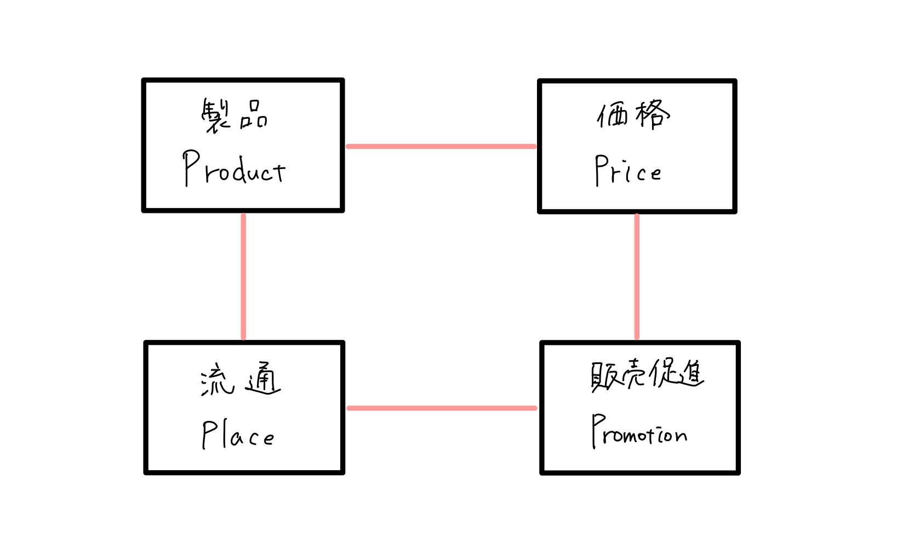
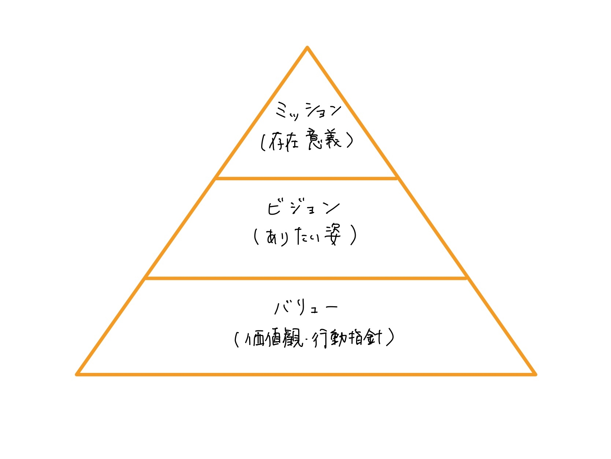
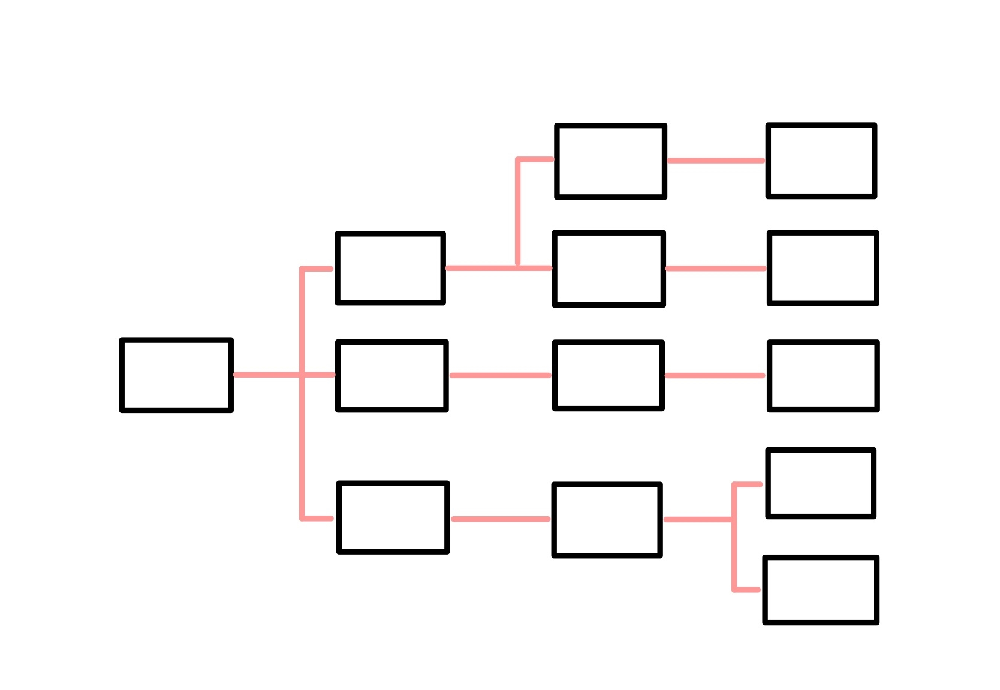

アイデア
このページの目的は、Webサイト作りにおける「アイデア」の必要性を知ってもらい、 自らがアイデアを考案する際のヒントといくつかの例を示すことです。
ここでの注意点は、ここで紹介するのはヒントと例であって、皆さんが実際に自分の頭を動かさないと得るものは 少なくなるということです。こういった考え方があることを知り、それに対して批判的に考え、自らでさらに調べ、 他の人に自分の考えを説明できるようにしていただきたいと思います。
「アイデア」の必要性
アイデアとは
アイデアとは、物事や計画にあたっての新しい意見や思いつきなどを指す言葉ですが、ここでは「Webサイトの 内容を考える際の材料」として定義します。実際に皆さんがWebサイトを作る作業を分解していけば、一つ一つは 「目的」や「ギミック」、「内容」など、言葉は色々ですがWebサイトを構成するための材料が必要です。
アイデア発想法を知る必要性
アイデアの発想法には、古くから様々なものが考案されてきました。それらは非常に優秀なものが多く、
それを用いて多くのアイデアが生み出されてきました。しかし、今日ではそれらを与えられたものとして
利用しているだけの人が多く存在します。
ここからいくつかの発想法を紹介します。これらは独立したものではなく、それぞれに関連があり、
同時に使うことができるものや、ある発想法の一部を抽出したものもあります。したがって、これらの発想法も
批判的に受け止め、なぜそれらが生み出されたのか、自分はどのようなアイデアを発想したくて
そのための方法を用いるかなどを考えながら、自らの考え方の栄養にしてください。
幅を重視した発想法
ルーレット
そもそもの課題やその切り口を考える方法です。課題や疑問を見つけるとき、私たちは5W1Hを用いて疑問文を作り、 考えることができます。それを用いて課題を見つけることができます。また、課題を見つけるとき、重要になる キーワードというものは少なからずあります。例えば未来、過去、海外、国内、自分、他人、目的、手段などです。 この疑問詞とキーワードというものに加え、抽象的な動詞を用いて文を作ります。  このようにしてルーレットのようなものを作り、様々な組み合わせの文を作ります。これは課題を考えるときの 文の構造を利用した発想であるといえます。
ブレインストーミング
これはもっとも有名な発想法の一つです。初めに評価を後回しにしてアイデアの発散を行い、ただただ量を重視して アイデアを出していきます。次に列挙したアイデアを整理して収束させていきます。その時によく使われるのがKJ法です。 アイデア同士の関係などを見てグループ化や階層化を行い、全体の構造を見ていきます。メリットはあらゆる角度からの 意見が出やすいことであり、デメリットは出た意見は断片的で網羅的であるとは言えない場合が多いことです。
全体を意識した発想法
ここでは、全体の構造を意識し、どういった枠組みでアイデアを発想していくかという部分に着目します。 仮説を用いた思考と、フレームワークを用いた思考です。
仮説思考
時間の制約がある場合や、既に目的が明確である場合に有効な方法です。問いに対する答えを今ある情報で仮に設定し、 その仮説を検証しながら質を高めていきます。先に雑多な情報を集めるのではなく、仮の答えを先に提示することで それに関わることについて考察すればよく、効率的に作業を進めることができます。メリットはまさに効率的で、 結論を意識するために作業の全体を意識することができるところです。デメリットは、仮説を正解であると思い込む 可能性があることと、発想の幅に制約が出てきてしまうことです。
フレームワーク思考
フレームワークとは、問題解決を行うための思考の枠組みです。これまでに様々なフレームワークが考案され、 その型にはめてそれぞれの項目を考えることで抜けがないプロジェクトに近づけることができます。 以下のような例があります。
-

４P分析
-

ミッション・ビジョン・バリュー
-

ロジック・ツリー
このようなフレームワークは、実際に成功した思考の枠組みであり、特にビジネスなどでは共通認識がある枠組みでも あります。したがってメリットとして、簡単にきっちりとした思考をすることができ、複数人で作業を進める時に 認識のズレをなくすことができるという点があります。逆にデメリットは、ありきたりな枠組みになるということです。 枠組みレベルから本当に新しいものを作るのには適していません。
まとめ
このようにしていくつかの例を挙げて発想法をみてきました。 あとは頑張ってください。（急に投げ出していくスタイル）